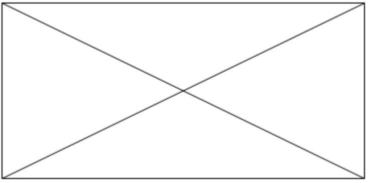

The Problem
ICO Market is Corrupted
A lack of accountability has undermined public confidence, with no easy way to evaluate the credibility of founders and their teams.
Professional investors are still relying on “intuition” and average customers are falling prey to scams.